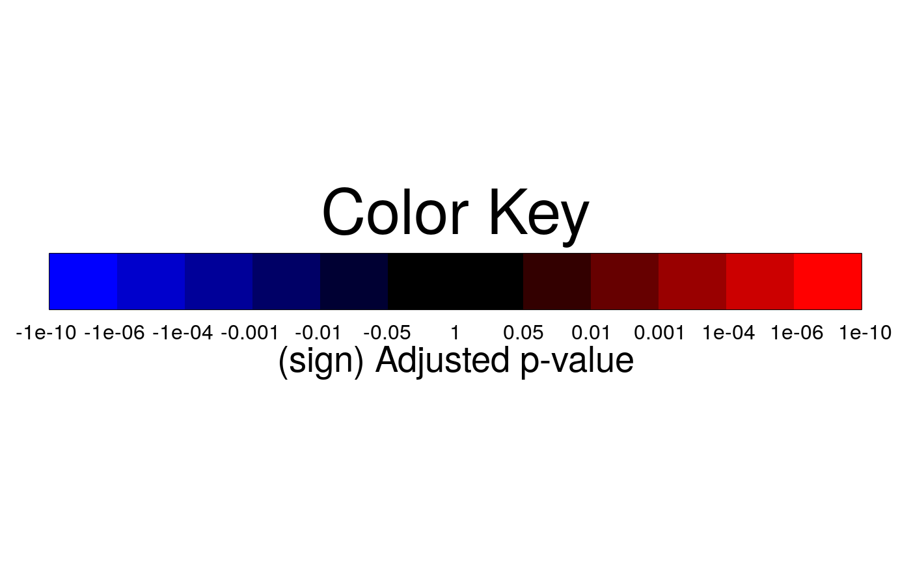

Visualization for model-based analysis and summarizing differentially abundant proteins
groupComparisonPlots.RdTo summarize the results of log-fold changes and adjusted p-values for differentially abundant proteins,
groupComparisonPlots takes testing results from function (groupComparison) as input and
automatically generate three types of figures in pdf files as output :
(1) volcano plot (specify "VolcanoPlot" in option type) for each comparison separately;
(2) heatmap (specify "Heatmap" in option type) for multiple comparisons ;
(3) comparison plot (specify "ComparisonPlot" in option type) for multiple comparisons per protein.
groupComparisonPlots( data, type, sig = 0.05, FCcutoff = FALSE, logBase.pvalue = 10, ylimUp = FALSE, ylimDown = FALSE, xlimUp = FALSE, x.axis.size = 10, y.axis.size = 10, dot.size = 3, text.size = 4, text.angle = 0, legend.size = 13, ProteinName = TRUE, colorkey = TRUE, numProtein = 100, clustering = "both", width = 10, height = 10, which.Comparison = "all", which.Protein = "all", address = "" )
Arguments
| data | 'ComparisonResult' in testing output from function groupComparison. |
|---|---|
| type | choice of visualization. "VolcanoPlot" represents volcano plot of log fold changes and adjusted p-values for each comparison separately. "Heatmap" represents heatmap of adjusted p-values for multiple comparisons. "ComparisonPlot" represents comparison plot of log fold changes for multiple comparisons per protein. |
| sig | FDR cutoff for the adjusted p-values in heatmap and volcano plot. level of significance for comparison plot. 100(1-sig)% confidence interval will be drawn. sig=0.05 is default. |
| FCcutoff | for volcano plot or heatmap, whether involve fold change cutoff or not. FALSE (default) means no fold change cutoff is applied for significance analysis. FCcutoff = specific value means specific fold change cutoff is applied. |
| logBase.pvalue | for volcano plot or heatmap, (-) logarithm transformation of adjusted p-value with base 2 or 10(default). |
| ylimUp | for all three plots, upper limit for y-axis. FALSE (default) for volcano plot/heatmap use maximum of -log2 (adjusted p-value) or -log10 (adjusted p-value). FALSE (default) for comparison plot uses maximum of log-fold change + CI. |
| ylimDown | for all three plots, lower limit for y-axis. FALSE (default) for volcano plot/heatmap use minimum of -log2 (adjusted p-value) or -log10 (adjusted p-value). FALSE (default) for comparison plot uses minimum of log-fold change - CI. |
| xlimUp | for Volcano plot, the limit for x-axis. FALSE (default) for use maximum for absolute value of log-fold change or 3 as default if maximum for absolute value of log-fold change is less than 3. |
| x.axis.size | size of axes labels, e.g. name of the comparisons in heatmap, and in comparison plot. Default is 10. |
| y.axis.size | size of axes labels, e.g. name of targeted proteins in heatmap. Default is 10. |
| dot.size | size of dots in volcano plot and comparison plot. Default is 3. |
| text.size | size of ProteinName label in the graph for Volcano Plot. Default is 4. |
| text.angle | angle of x-axis labels represented each comparison at the bottom of graph in comparison plot. Default is 0. |
| legend.size | size of legend for color at the bottom of volcano plot. Default is 7. |
| ProteinName | for volcano plot only, whether display protein names or not. TRUE (default) means protein names, which are significant, are displayed next to the points. FALSE means no protein names are displayed. |
| colorkey | TRUE(default) shows colorkey. |
| numProtein | The number of proteins which will be presented in each heatmap. Default is 100. Maximum possible number of protein for one heatmap is 180. |
| clustering | Determines how to order proteins and comparisons. Hierarchical cluster analysis with Ward method(minimum variance) is performed. 'protein' means that protein dendrogram is computed and reordered based on protein means (the order of row is changed). 'comparison' means comparison dendrogram is computed and reordered based on comparison means (the order of comparison is changed). 'both' means to reorder both protein and comparison. Default is 'protein'. |
| width | width of the saved file. Default is 10. |
| height | height of the saved file. Default is 10. |
| which.Comparison | list of comparisons to draw plots. List can be labels of comparisons or order numbers of comparisons from levels(data$Label), such as levels(testResultMultiComparisons$ComparisonResult$Label). Default is "all", which generates all plots for each protein. |
| which.Protein | Protein list to draw comparison plots. List can be names of Proteins or order numbers of Proteins from levels(testResultMultiComparisons$ComparisonResult$Protein). Default is "all", which generates all comparison plots for each protein. |
| address | the name of folder that will store the results. Default folder is the current working directory. The other assigned folder has to be existed under the current working directory. An output pdf file is automatically created with the default name of "VolcanoPlot.pdf" or "Heatmap.pdf" or "ComparisonPlot.pdf". The command address can help to specify where to store the file as well as how to modify the beginning of the file name. If address=FALSE, plot will be not saved as pdf file but showed in window. |
Details
Volcano plot : illustrate actual log-fold changes and adjusted p-values for each comparison separately with all proteins. The x-axis is the log fold change. The base of logarithm transformation is the same as specified in "logTrans" from
dataProcess. The y-axis is the negative log2 or log10 adjusted p-values. The horizontal dashed line represents the FDR cutoff. The points below the FDR cutoff line are non-significantly abundant proteins (colored in black). The points above the FDR cutoff line are significantly abundant proteins (colored in red/blue for up-/down-regulated). If fold change cutoff is specified (FCcutoff = specific value), the points above the FDR cutoff line but within the FC cutoff line are non-significantly abundant proteins (colored in black)/Heatmap : illustrate up-/down-regulated proteins for multiple comparisons with all proteins. Each column represents each comparison of interest. Each row represents each protein. Color red/blue represents proteins in that specific comparison are significantly up-regulated/down-regulated proteins with FDR cutoff and/or FC cutoff. The color scheme shows the evidences of significance. The darker color it is, the stronger evidence of significance it has. Color gold represents proteins are not significantly different in abundance.
Comparison plot : illustrate log-fold change and its variation of multiple comparisons for single protein. X-axis is comparison of interest. Y-axis is the log fold change. The red points are the estimated log fold change from the model. The blue error bars are the confidence interval with 0.95 significant level for log fold change. This interval is only based on the standard error, which is estimated from the model.
Examples
#> INFO [2021-07-05 20:05:59] ** Features with one or two measurements across runs are removed. #> INFO [2021-07-05 20:05:59] ** Fractionation handled. #> INFO [2021-07-05 20:05:59] ** Updated quantification data to make balanced design. Missing values are marked by NA #> INFO [2021-07-05 20:05:59] ** Log2 intensities under cutoff = 3.776 were considered as censored missing values. #> INFO [2021-07-05 20:05:59] ** Log2 intensities = NA were considered as censored missing values. #> INFO [2021-07-05 20:05:59] ** Use all features that the dataset originally has. #> INFO [2021-07-05 20:05:59] #> # proteins: 2 #> # peptides per protein: 2-2 #> # features per peptide: 3-3 #> INFO [2021-07-05 20:05:59] #> 1 2 3 4 5 6 7 8 9 10 #> # runs 3 3 3 3 3 3 3 3 3 3 #> # bioreplicates 3 3 3 3 3 3 3 3 3 3 #> # tech. replicates 1 1 1 1 1 1 1 1 1 1 #> INFO [2021-07-05 20:05:59] == Start the summarization per subplot... #> | | | 0% | |=================================== | 50% | |======================================================================| 100% #> INFO [2021-07-05 20:05:59] == Summarization is done.#> PROTEIN PEPTIDE TRANSITION FEATURE LABEL GROUP RUN #> 1 IDHC ATDVIVPEEGELR_2 y7_NA ATDVIVPEEGELR_2_y7_NA H 0 1 #> 2 IDHC ATDVIVPEEGELR_2 y7_NA ATDVIVPEEGELR_2_y7_NA L 1 1 #> 3 IDHC ATDVIVPEEGELR_2 y7_NA ATDVIVPEEGELR_2_y7_NA H 0 2 #> 4 IDHC ATDVIVPEEGELR_2 y7_NA ATDVIVPEEGELR_2_y7_NA L 1 2 #> 5 IDHC ATDVIVPEEGELR_2 y7_NA ATDVIVPEEGELR_2_y7_NA H 0 3 #> 6 IDHC ATDVIVPEEGELR_2 y7_NA ATDVIVPEEGELR_2_y7_NA L 1 3 #> SUBJECT FRACTION originalRUN censored INTENSITY ABUNDANCE newABUNDANCE #> 1 0 1 1 FALSE 84361.0835 15.855859 15.855859 #> 2 1 1 1 FALSE 215.1353 7.240669 7.240669 #> 3 0 1 2 FALSE 62109.5876 15.801179 15.801179 #> 4 2 1 2 FALSE 1205.2252 10.113738 10.113738 #> 5 0 1 3 FALSE 65114.3646 15.755022 15.755022 #> 6 3 1 3 FALSE 1476.3046 10.292109 10.292109 #> predicted #> 1 NA #> 2 NA #> 3 NA #> 4 NA #> 5 NA #> 6 NA## based on multiple comparisons (T1 vs T3; T1 vs T7; T1 vs T9) comparison1<-matrix(c(-1,0,1,0,0,0,0,0,0,0),nrow=1) comparison2<-matrix(c(-1,0,0,0,0,0,1,0,0,0),nrow=1) comparison3<-matrix(c(-1,0,0,0,0,0,0,0,1,0),nrow=1) comparison<-rbind(comparison1,comparison2, comparison3) row.names(comparison)<-c("T3-T1","T7-T1","T9-T1") groups = levels(QuantData$ProteinLevelData$GROUP) colnames(comparison) <- groups[order(as.numeric(groups))] testResultMultiComparisons<-groupComparison(contrast.matrix=comparison, data=QuantData, use_log_file = FALSE)#> INFO [2021-07-05 20:05:59] == Start to test and get inference in whole plot ... #> | | | 0% | |=================================== | 50% | |======================================================================| 100% #> INFO [2021-07-05 20:05:59] == Comparisons for all proteins are done.testResultMultiComparisons$ComparisonResult#> Protein Label log2FC SE Tvalue DF pvalue adj.pvalue #> 1 IDHC T3-T1 0.15937530 0.2917031 0.5463614 18 5.915262e-01 6.757573e-01 #> 2 IDHC T7-T1 6.15438359 0.2917031 21.0981085 18 3.819167e-14 7.638334e-14 #> 3 IDHC T9-T1 6.25407169 0.2917031 21.4398535 18 2.886580e-14 5.773160e-14 #> 4 PMG2 T3-T1 -0.06456834 0.1518673 -0.4251629 18 6.757573e-01 6.757573e-01 #> 5 PMG2 T7-T1 -0.09032809 0.1518673 -0.5947831 18 5.593918e-01 5.593918e-01 #> 6 PMG2 T9-T1 -0.22946599 0.1518673 -1.5109639 18 1.481542e-01 1.481542e-01 #> issue MissingPercentage ImputationPercentage #> 1 NA 0 0 #> 2 NA 0 0 #> 3 NA 0 0 #> 4 NA 0 0 #> 5 NA 0 0 #> 6 NA 0 0# Volcano plot with FDR cutoff = 0.05 and no FC cutoff groupComparisonPlots(data=testResultMultiComparisons$ComparisonResult, type="VolcanoPlot", logBase.pvalue=2, address="Ex1_") # Volcano plot with FDR cutoff = 0.05, FC cutoff = 70, upper y-axis limit = 100, # and no protein name displayed # FCcutoff=70 is for demonstration purpose groupComparisonPlots(data=testResultMultiComparisons$ComparisonResult, type="VolcanoPlot", FCcutoff=70, logBase.pvalue=2, ylimUp=100, ProteinName=FALSE,address="Ex2_")#> Warning: Removed 10 rows containing missing values (geom_path).#> Warning: Removed 10 rows containing missing values (geom_path).# Heatmap with FDR cutoff = 0.05 groupComparisonPlots(data=testResultMultiComparisons$ComparisonResult, type="Heatmap", logBase.pvalue=2, address="Ex1_") # Heatmap with FDR cutoff = 0.05 and FC cutoff = 70 # FCcutoff=70 is for demonstration purpose groupComparisonPlots(data=testResultMultiComparisons$ComparisonResult, type="Heatmap", FCcutoff=70, logBase.pvalue=2, address="Ex2_")# Comparison Plot groupComparisonPlots(data=testResultMultiComparisons$ComparisonResult, type="ComparisonPlot", address="Ex1_")#> pdf #> 2# Comparison Plot groupComparisonPlots(data=testResultMultiComparisons$ComparisonResult, type="ComparisonPlot", ylimUp=8, ylimDown=-1, address="Ex2_")#> pdf #> 2